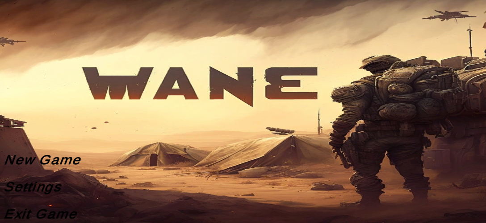
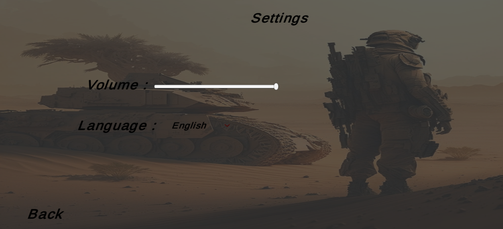
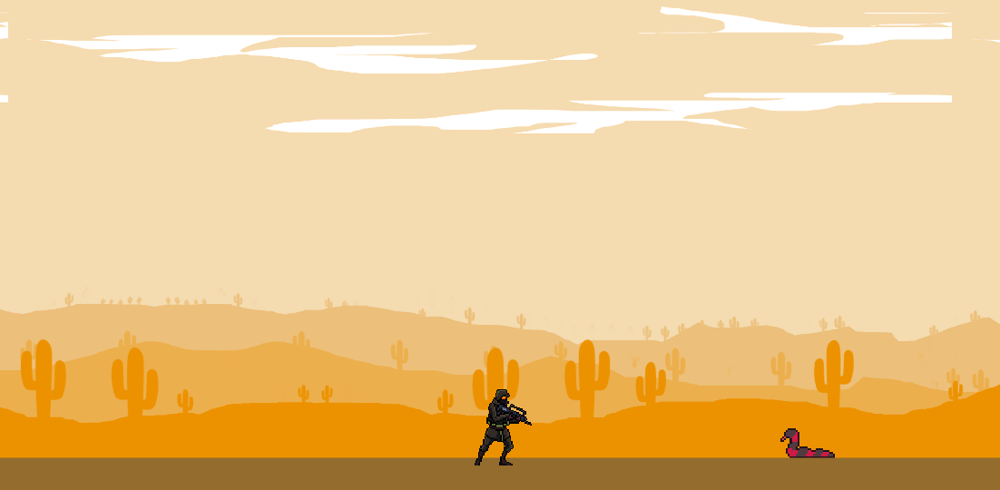

Wane – A 2D Pixel Art Adventure Game#
Wane is a 2D pixel art adventure game developed using the Unity engine and C#. In this game, you step into the boots of a lone soldier defending a mystical desert realm from relentless monsters.
Development Overview#
As the sole developer, I designed and built Wane from the ground up—coding, art, design, and mechanics. Every component, from fluid player controls to dynamic enemy behaviors, was carefully implemented to ensure a polished and responsive experience.
Key highlights include:
Character Movement: Precise, responsive soldier movement using Unity’s input and physics systems.
Combat System: Real-time swordplay with timed attacks, hit detection, and parry mechanics.
Art Style: Handcrafted pixel environments inspired by desert landscapes, enhanced with fantasy elements. All assets were created using Photoshop.
Screenshots#
  {kind=link}
{kind=link}
{kind=link}
Code Sample: Enemy Spawner#
Here’s a simplified example of the enemy spawning system:
using UnityEngine;
using System.Collections;
using System.Collections.Generic;
public class EnemySpawner : MonoBehaviour
{
public GameObject enemyPrefab;
public float spawnInterval = 3f;
public int maxEnemies = 5;
public Transform[] spawnPoints;
public float cooldownTime = 10f;
private List<GameObject> activeEnemies = new List<GameObject>();
private bool isCoolingDown = false;
private void Start()
{
StartCoroutine(SpawnEnemies());
}
private IEnumerator SpawnEnemies()
{
while (true)
{
if (activeEnemies.Count < maxEnemies && !isCoolingDown)
{
Transform spawnPoint = spawnPoints[Random.Range(0, spawnPoints.Length)];
GameObject enemy = Instantiate(enemyPrefab, spawnPoint.position, spawnPoint.rotation);
activeEnemies.Add(enemy);
yield return new WaitForSeconds(spawnInterval);
}
else
{
yield return null;
}
}
}
}
Behind the Scenes: Unity Editor Snapshots#
Below are snapshots from the Unity Editor during different stages of development:
{kind=link}
{kind=link}
{kind=link}